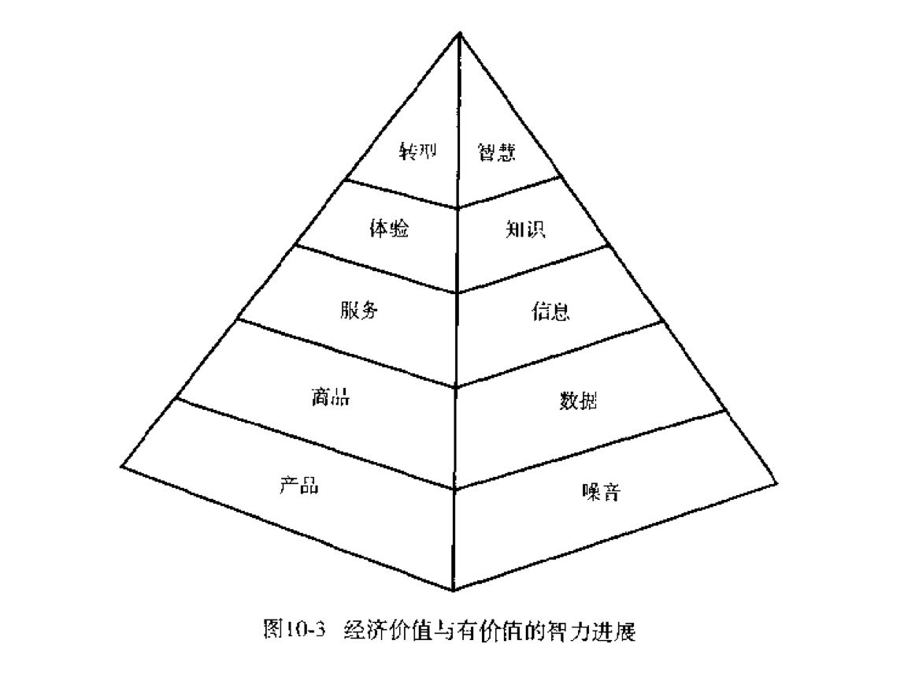
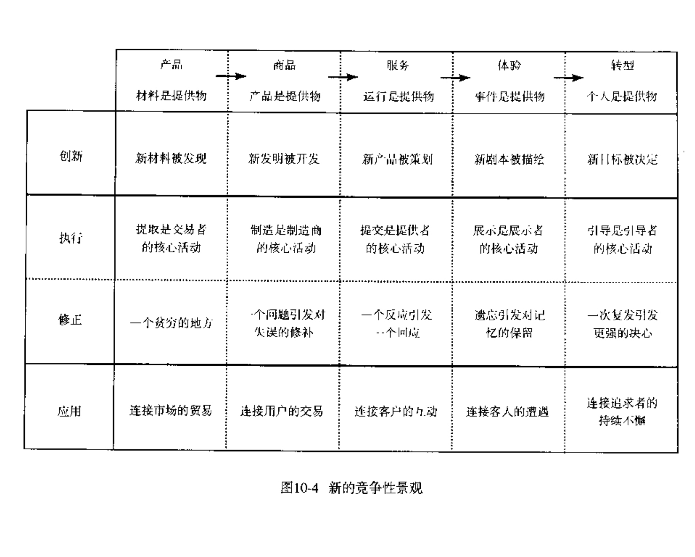

寻找你在现实世界中的角色¶
在转型的所有三个过程中诱导者都需要有这样的智慧。在判断过程中，他们需要智慧以区分真实的志向与虚假的愿望、高不可攀的目标和自我迷惑的渴望，判断他们个人或企业是否有足够的能力来完成客户渴望的目标。
 在底部，初级产品和噪音相对应，面对大量丝毫没有经过组织、不具任何含义的原始数据，原料提炼企业需要花费很大力气才能发现有价值的东西（如金矿或石油)。经过编码，这些原始观测值成为有用的数据。物理与金融数据的收集使产业革命成为可能。工业革新依赖于劳动分工，标准化、专业化、效率的提高等等。实际上，产业革命的高潮来自于以前被当做数据处理过程行业的计算机的诞生。在当时，数据如此之多，大大超过人们的处理能力。
不管体验多深刻，随着时间的流逝都会淡忘，而转型是指引顾客实现自己的渴望目标，并长久保持这种转型。没有哪种东西会比实现自己渴望的目标更具体、更显著、更有价值。
企业不应为顾客的付出收费，而应就顾客所获得的部分收费。
对什么收费，你就是什么类型的公司。
- 如果你就初级产品收费，则你是产品企业；
- 如果你就有形产品收费，则你是商品企业；
- 如果你就你的行动收费，则你是服务企业；
- 如果你就你与顾客相处的时间收费，则你是体验企业；
- 如果你就顾客所获得的成就收费，则你是转型企业
赢得顾客信任的方式： 1. 定制产品。 2. 提供真正吸引人的体验：与顾客建立联系的目的是要听到顾客想说的。 3. 为上演新剧创造环境：把具有相同渴望的顾客聚在一个社区里，让他们不光向你学习，还可以相互学习。 4. 指导你的演员。任何一次体验必须有助于提升顾客的总个人价值。
构成公司业务最终如何创造价值4要素：¶
- 源泉：从某些新东西中创造价值的工作
- 执行：从生产成品中创造价值的工作
- 更正：从改进中创造价值的工作
- 应用：从使用过的东西中创造价值的工作

以原料为基础的公司¶
- 开发新物质
- 更有效地提炼
- 探索替代场所
- 从事市场交易
以商品为基础的公司¶
- 开发新发明
- 有效地生产产品
- 改正错误
- 与用户进行交易
以服务为基础的公司¶
- 设计新的流程
- 有效完成操作
- 提供反应
- 与顾客互动
以体验为基础的公司¶
- 撰写新的剧本
- 有效地展示事件
- 保存记忆
- 与客户意外相遇
以转型为基础的公司¶
- 决定新目标
- 指引单个顾客
- 弱化信心
- 让渴望者坚持下去
战略的重要性¶
必须渴望带来一种希望的改变，不是为了改变而改变，而是为了其他东西，否则会导致漫无目的地游荡，经常会怀疑自己的方向。
很多使命的陈述未能澄清使命的含义，因此我们更倾向将重点放在真正改变顾客生活的目标上。
重要的是努力发现自身还没有检查发现的方面，把相对的改变作为一种副产品看待。只有公司深刻思考自己真正处在什么位置的时候，他们的目标才可能实现。
我必须找到自己的位置。你的公司到底处在什么级别上，5种经济提供物————产品、商品、服务、体验、转型————导致了5种不同的可能，对你的公司雇员、顾客会有着巨大的影响。